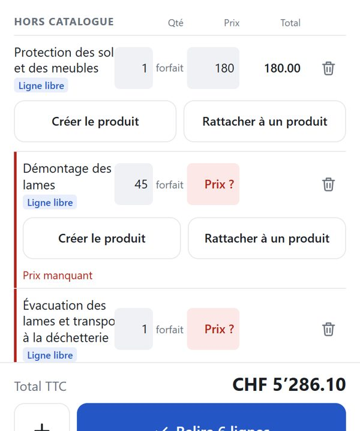
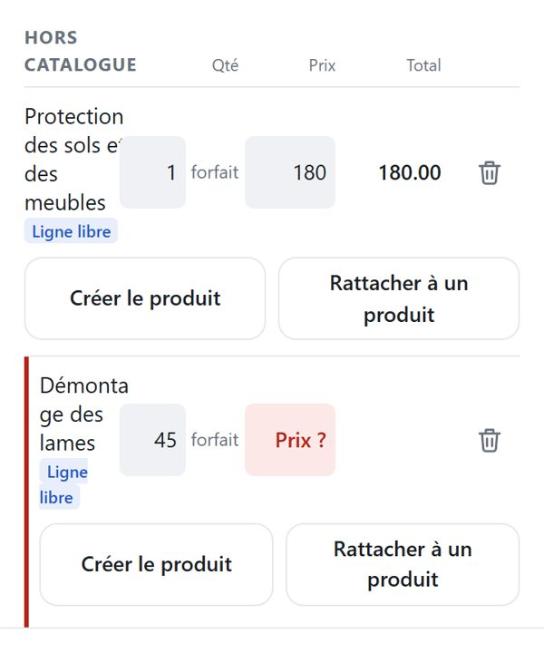
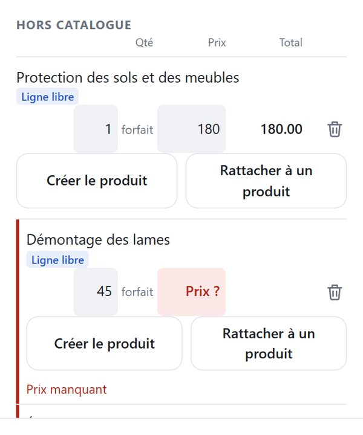
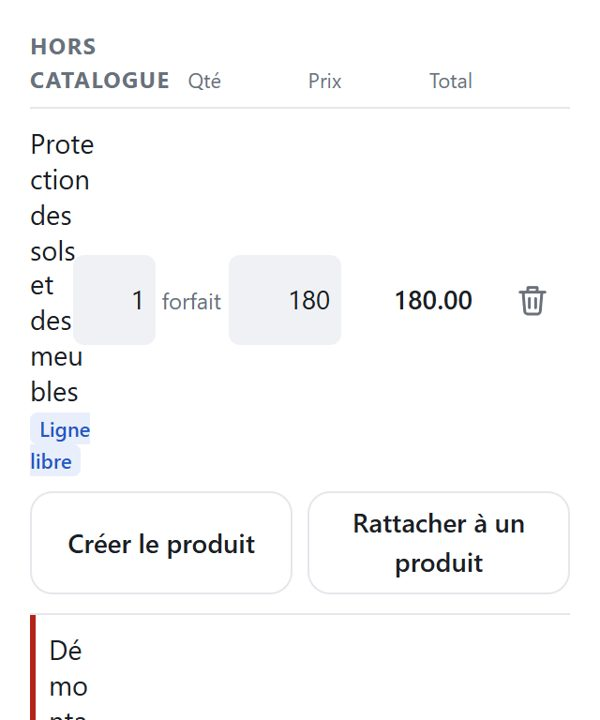
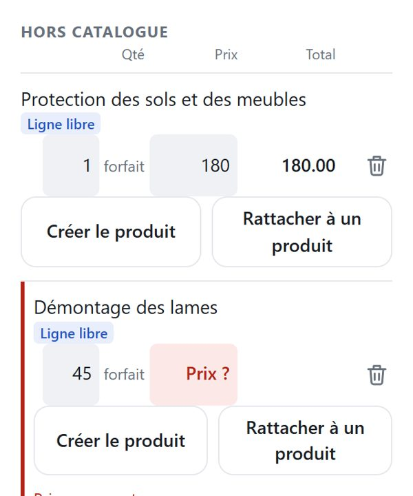
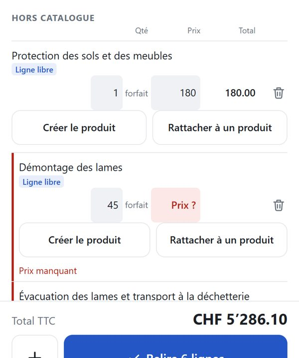

Lignes d'offre au téléphone
Bug vu par Luigi le 17 novembre 2026 : « l'offre débordait de l'écran, comme si elle avait été zoomée ». Reproduit sur ses deux offres, recopiées du site de test vers le poste de développement. Captures prises dans Chromium en vue téléphone.
Ce qui se passe
Sur chaque ligne au forfait, la quantité recouvre la fin de la désignation. Sur un écran de 360 points ou moins (Android courant, ou un téléphone réglé en « affichage agrandi »), les mots se coupent en plus au milieu : « Démonta / ge ».

La cause. La colonne de la quantité mesure 62 points, toujours. Elle contient le champ (44) et l'unité. « m² » y tient ; « forfait » non : environ 87 points. Le contenu, calé à droite, déborde vers la gauche, sur la désignation, qui n'a plus que 76 points à 360 de large.
| Largeur d'écran | Lignes dont la quantité recouvre la désignation | Lignes avec un mot coupé |
|---|---|---|
| 320 points | 9 sur 15 | 15 sur 15 |
| 360 points | 9 sur 15 | 7 sur 15 |
| 390 points | 9 sur 15 | 0 |
| 412 points | 9 sur 15 | 0 |
| Avec la correction, toutes largeurs | 0 | 0 |
Les deux offres de Luigi, 6 et 9 lignes. Mesuré par script sur la position des éléments, captures vérifiées à l'œil.
La correction proposée
Sous 420 points de large, la désignation prend toute la largeur ; la quantité, le prix, le total et la corbeille passent juste en dessous. Au-delà de 420 points (grand téléphone en paysage, tablette, PC), rien ne change : une ligne reste sur une seule ligne.
Elle revient sur ta décision du 6 novembre (« lignes sur une seule ligne ») pour les téléphones. Une ligne prend environ 30 points de haut de plus : on voit un peu moins de lignes d'un coup, en échange de désignations entières.




